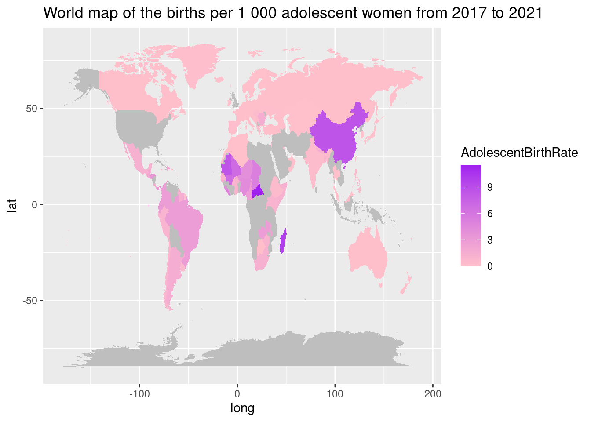
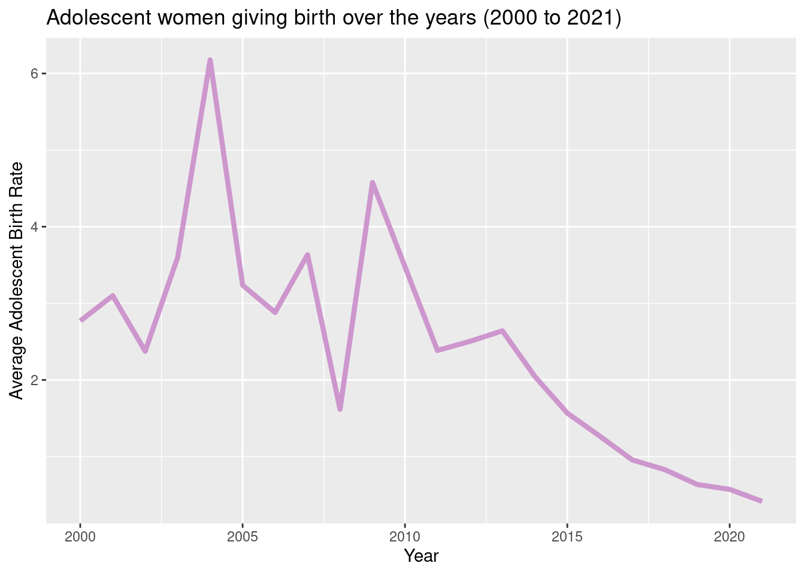
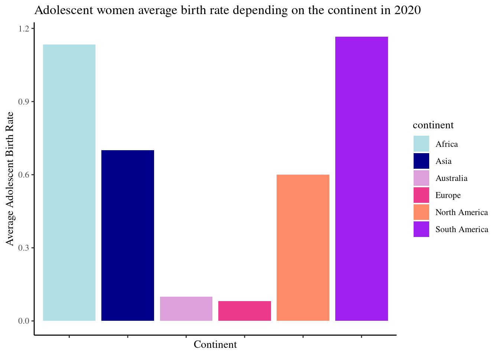
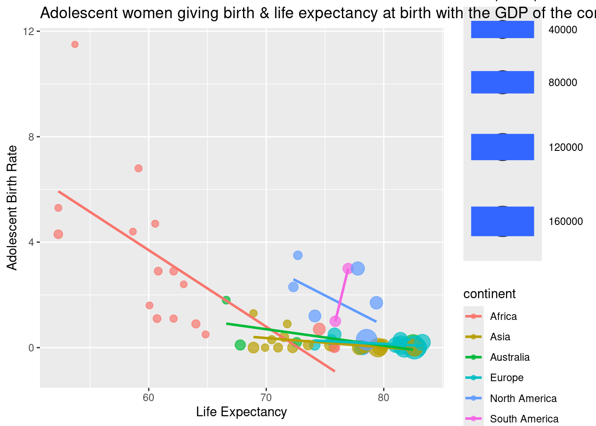

A Worlwide Snapshot
Adolescent women giving birth (10 to 14 years old)
Introduction
This report is a worldwide snapshot of the adolescent women giving birth. The adolescent women include women between 10 and 14 years old. The objective is to show the current situation of adolescent women regarding giving birth depending on the continents, countries and its global evolution over the years. Additionally, this report reveals that The adolescent women birth rate is correlated to the life expectancy at birth and to the GDP per capita.
This report contains:
World map of the births per 1 000 adolescent women from 2017 to 2021
Adolescent women giving birth over the years (2000 to 2021)
Adolescent women average birth rate depending on the continent in 2020
Adolescent women giving birth & life expectancy at birth with the GDP of the concerned countries in 2017
All of the figures have to be taken with caution as some data, depending on the years and the countries, have been lacking. Still the source is reliable as it all comes from the UNICEF.
Adolescent women birth rate situation all over the world per country
The regions of the world where the number of adolescent women giving birth are at the highest are mostly concentrated in North Africa and South America.
The global evolution of the adolescent women birth rate since 2000
Since 2000 the number of births per 1000 adolescent women varied a lot but lowered over the past few years, especially since 2009.

Comparing the adolescent women birth rate depending on the continent
In 2020, the two regions with the highest adolescent birth rate (10 to 14 years old) are South America and Africa with an average adolescent birth rate between 1.1 and 1.2. Comes afterward North America and Asia with an average adolescent birth rate of respectively 0.6 an 0.7. Europe and Australia demonstrates the lowest average both not exceeding 0.1

Correlation between adolescent women birth rate, life expectancy and GDP per capita
In this chart, a correlation can be seen between adolescent women giving birth and life expectancy at birth. Indeed, there is a tendency for the number of birth per 1000 adolescent women to decrease as the life expectancy at birth increase. It is also clear that african countries shows the biggest number of birth per 1000 adolescent women with Latin America. Additionally, the countries with the highest GDP tend to have a higher life expectation at birth but also a lower number of birth per 1000 adolescent women
